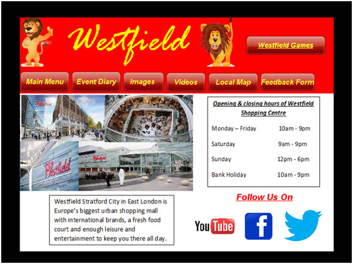
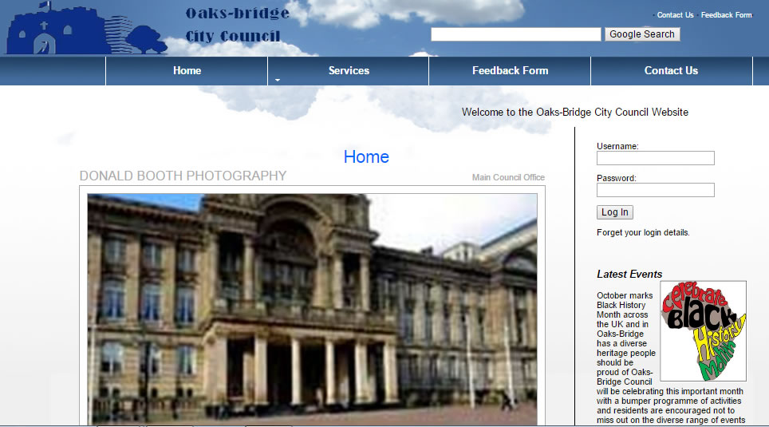
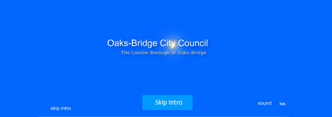

MENU
Skip menuPortfolio
Multimedia Application
During my final year at sixth form I undertook a yearlong multimedia application project. I chose to make a multimedia application for Westfield Stratford Shopping Centre as the topic seemed interesting but with many of the aspects being highly challenging. It involved investigating and analysing as I had to research how to create a multimedia application. It also showed my skills in planning and organising as I had to keep to schedule and due dates.
Main page

Click here to download my Multimedia application.
Council Website
During my final year at sixth form I created a website of a fictional council. I chose to use Adobe Dreamweaver CS5.5 to create the website where I used a range to IT skills such a HTML programming and Adobe Photoshop editing. I also created a online Wordpress blog when creating my website to shown the different IT skills I used when creating the website. To read my blog click here. It involved investigating and analysing as I had to research how to create a website and how to do such things like upload a website and how to add features to a website.
Homepage

To download the website click here.
Animation
In my spare time I created small animation introductions using Adobe Flash CS6. In the flash animation I include such features such as music, effects, animations and roll overs. It involved drive as I had to learn how to create aminations and how to add feature such as music, videos and colours.
A screenshot of the flash animation

Click here to download.
Business Analysis - University Project 1
In this project my group is a market intelligence business who helps aid businesses grow in their specific industry in the Coventry area. My Group decided to do our research in the retail sector and we as a group found information of other businesses in this sector, current and emerging technology, the level of completion in the sector, certain economics trends, impact factors, organisational structure of businesses in the sector, etc. We also created a survey/questionnaire to gather our own information on consumers in the Coventry area on where they are likely to shop, how much they spend when shopping, etc. Then from our data we created and found we then analysed our findings on how useful it is and does it related to the Coventry area.
To download the report click here .
Data Processing Tool - University Project 2
In this project my group has assumed the role of a market intelligence business, tasked with building a database capable of managing projects. We will be using a program called SQL+ to create the database and using an operational mapper called SQL Alchemy to help python capture and utilise data.
We have also compiled a report on NoSQL, in order to explain the alternatives to SQL, in which, we have covered how it is used in business, a critique of NoSQL databases and considerations that need to be made if you were follow this alternative database system route.
To download the data processing tool click here .